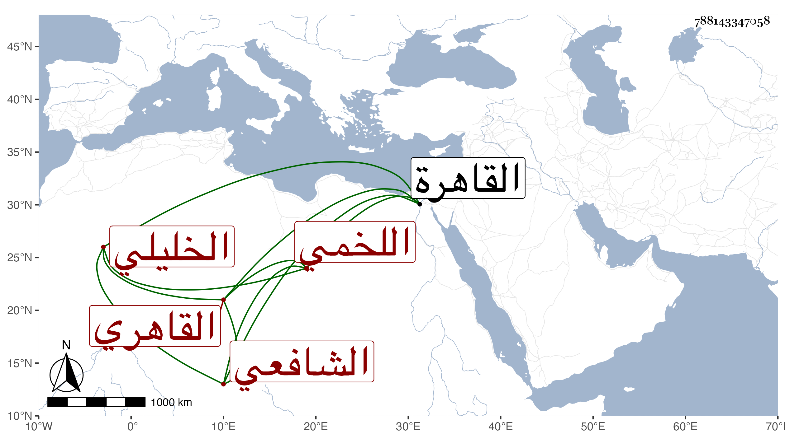

0902Sakhawi.DawLamic.ITO20230111-ara1.EIS1600.788143347058
Biography ID: 788143347058
313
محمد بن محمد بن عبد الله بن محمد بن عبد الله بن محمد بن الخضر بن عياد ابن صالح العلاء اللخمي الخليلي ثم القاهري الشافعي . ولد سنة خمس وتسعين وسبعمائة وقدم القاهرة فقرأ القرآن وسمع من شيخنا وإسحق بن محمد بن إبراهيم التميمي والفرياني الكذاب ولازم درس البدر بن الأمانة والبرهان بن حجاج الأبناسي وقرأ النحو على الشطنوفي والفرائض على أبي الجود ، وحج وباشر الشهادة وكان حيا بعد الخمسين . استفدته من خط الدوماطي وذكر في شيوخه أيضا الحلاوي وليس بعمدة .
